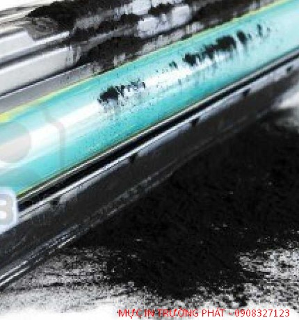
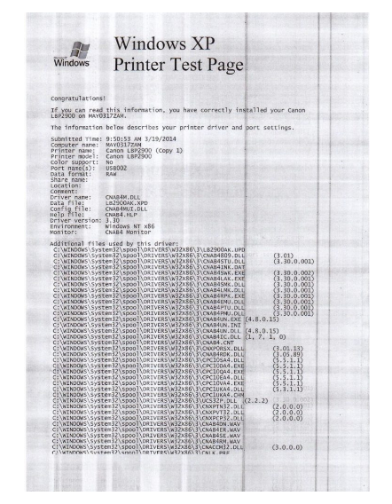
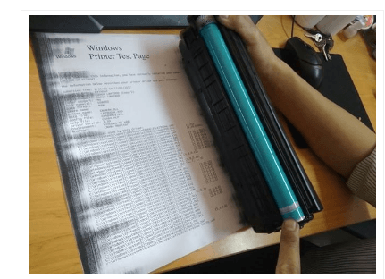

Giải Pháp Khắc Phục Máy In Laser Bị Lem Mực
Nguyên nhân máy in laser bị lem mực
Khi máy in laser bị lem mực. Điều đó có nghĩa là trên tờ giấy sẽ xuất hiện những chấm đen, vệt đen trên bản sao được in hay sao chép ra. Điều này dẫn tới chất lượng bản sao kém, nhìn mất thẩm mỹ. Đồng nghĩa với đó bạn phải tốn thêm chi phí giấy, mực để thực hiện thao tác in ấn lại vì bản sao không vừa ý.
Sự cố lem mực xảy ra khá thường xuyên. Đây là một vấn đề khá đau đầu cho họ. Chất lượng bản in không tốt, gây khó chịu cho người sử dụng. Làm hao tổn chi phí in ấn văn phòng. Mất thời gian để tìm cách sửa chữa. Do đó người sử dụng cần phải biết được nguyên nhân tại sao, và cách xử lý trong từng trường hợp.

Hướng dẫn sửa máy in laser bị lem mực ngay tại nhà
Bộ phận hộp mực bị bẩn
Hộp mực máy in bẩn, có cặn mực là nguyên nhân phổ biến khiến máy in laser bị lem mực. Trong hộp mực có chứa lượng mực dư thừa, đọng lại ở đáy hộp mực. Khi in, số lượng mực sử dụng quá nhiều, bám vào giấy in làm bản in bị lem.
Cách khắc phục lỗi lem mực khá đơn giản, bạn chỉ cần tháo hộp mực máy in ra, vệ sinh sạch sẽ bằng cách thay mực, lau chùi bằng vải mềm cho thật sạch là xong. Đối với máy in được sử dụng thường xuyên thì bạn nên tiến hành định kỳ một tháng một lần và ba tháng một lần đối với máy in dùng ít hơn để đảm bảo máy in luôn sạch sẽ.

Do hỏng bộ phận gạt mực máy in
Máy in có một bộ phận gọi là gạt mực để gạt bớt lượng mực thừa bám lại trên giấy in. Gạt mực rất dễ bị hỏng do chỉ được thiết kế dùng được trong một lượng bản in nhất định. Trong trường hợp máy in in ra mà bản in có những vệt đen kéo dài, thì hãy vệ sinh hộp mực, nếu vệ sinh sạch mà vẫn còn hiện tượng này thì có thể gạt mực của máy in đã bị hỏng, bị mòn cần phải thay thế gạt mực. Nếu bạn không tự làm được hãy gọi các đơn vị dịch vụ đến sửa chữa máy in để máy in hoạt động tốt nhất.
Do trống mực bị mòn
Có thể quá trình sử dụng máy in lâu ngày làm trống mực bị mòn nên nhận mực in và hoạt động ép mực bám lên giấy không còn chuẩn nữa, gây ra hiện tượng máy in bị lem mực.
Đây có lẽ là nguyên nhân khá phổ biến, bạn cần kiểm tra kỹ trống, nếu thật sự là lỗi bộ phận này thì bạn nên thay mới vì trống mực không còn hoạt động tốt cũng là nguyên nhân gây ra nhiều lỗi máy in khác.

Do lô sấy không đủ nhiệt
Lô sấy là bộ phận có tác dụng làm nóng mực khô để có thể in lên giấy. Đây là bộ phận rất quan trọng trên máy in và khi lô sấy hỏng thì các văn bản được in ra sẽ không được như ý về chữ hiển thị trên đó, có khi chữ sẽ bị bay gần hết tùy vào mức độ hỏng của lô sấy. Tuy nhiên dù hỏng nặng hay nhẹ thì bạn bắt buộc phải thay để đảm bảo cho máy hoạt động trơn tru.
Trên đây là các nguyên nhân gây ra lỗi máy in bị lem mực và cách khắc phục. Mực in Trường Phát hy vọng bài viết này có thể giúp ích được cho các bạn trong quá trình sử dụng máy in.
Cần nạp mực hoặc sửa máy in tận nơi? Mực In Trường Phát có mặt trong 30 phút tại TP.HCM — in test trước khi tính tiền, bảo hành 1 tháng.
0908.327.123 · 0819.007.394 (Zalo cả 2 số)